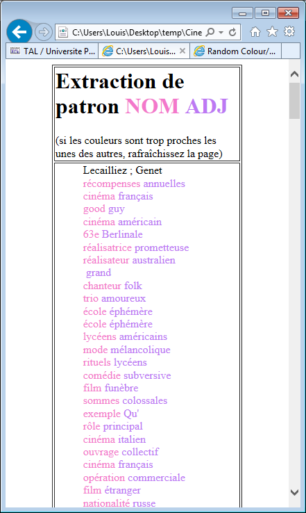

Extraction de motifs avec XSLT
Consigne
Il s'agit ici de créer une feuille de style XSLT qui pourra être utilisée sur les sorties XML réalisées à l'aide TreeTagger dans la phase précédente.
Une feuille de style est fournie par les enseignants. J'ai décidé de me baser dessus, en ayant en arrière pensée la génération de tels feuilles pour un motif arbitraire.
Couleurs
C'est pourquoi j'ai décidé de me pencher sur le problème des couleurs. En effet, si on veut pouvoir générer des feuilles pouvant gérer un nombre arbitrairement grand de catégories lexicales, il faut aussi pouvoir y utiliser un tel nombre de couleurs.
La feuille de style embarque dans un petit script qui s'occupe de coloriser les classes affectées aux éléments de sorties qui ont pour nom conventionnel colorX avec X ∈ ℕ*, avec X commençant à 1 et incrémenté de 1 par 1.
L'obtention des couleurs pseudo-aléatoire se fait via un script tiers lui-même basé sur un billet de blog.
<?xml version="1.0" encoding="UTF-8" ?> <xsl:stylesheet xmlns:xsl="http://www.w3.org/1999/XSL/Transform" version="1.0"> <xsl:output method="html"/> <xsl:template match="/"> <html> <head> <meta http-equiv="Content-Type" content="text/html; charset=utf-8"/> <script src="color.js" type="text/javascript"/> <script type="text/javascript"> <![CDATA[ function colorize_classes(nbClasses) { for (var i = 0; i < nbClasses; i++) { var color = new RColor; colorize_class('color' + (i + 1), color.get(true)); } } function colorize_class(className, colorString) { var elems = document.getElementsByClassName(className); for (i = 0; i < elems.length; i++) { //elems[i].style.backgroundColor = colorString; elems[i].style.color = colorString; } } ]]> </script> </head> <body onload="colorize_classes(2)"> <table align="center" width="70%" border="1"> <tr> <td width="90%" valign="top"> <font> <h1> Extraction de patron <font color="red"> <b class="color1">NOM</b> </font> <font color="blue"> <b class="color2">ADJ</b> </font> </h1> (si les couleurs sont trop proches les unes des autres, rafraîchissez la page) </font> </td> </tr> <tr> <td> <blockquote> <xsl:apply-templates/> </blockquote> </td> </tr> </table> </body> </html> </xsl:template> <xsl:template match="element"> <xsl:choose> <xsl:when test="(./data[contains(text(),'NOM')]) and (following-sibling::element[1] [./data[contains(text(),'ADJ')]])"> <span class="color1"> <xsl:value-of select="./data[3]"/> </span> <xsl:text></xsl:text> </xsl:when> <xsl:when test="(./data[contains(text(),'ADJ')]) and (preceding-sibling::element[1] [./data[contains(text(),'NOM')]])"> <span class="color2"> <xsl:value-of select="./data[3]"/> </span> <br/> </xsl:when> </xsl:choose> </xsl:template> </xsl:stylesheet>
Résultat
On obtient bien ce qu'on recherche, à quelques exceptions où seul un adjectif semble se montrer. Vous pouvez consulter la page vous-même.
